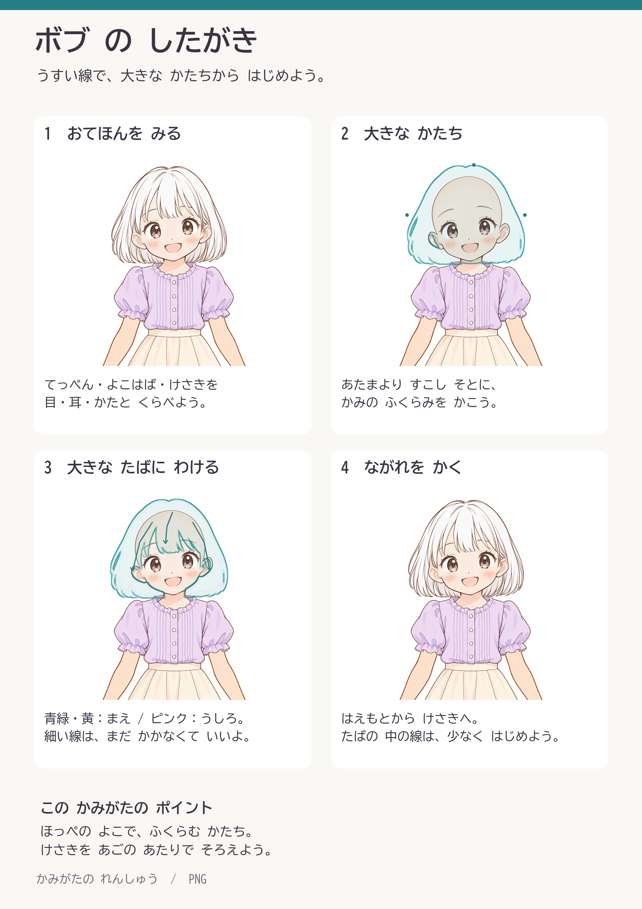
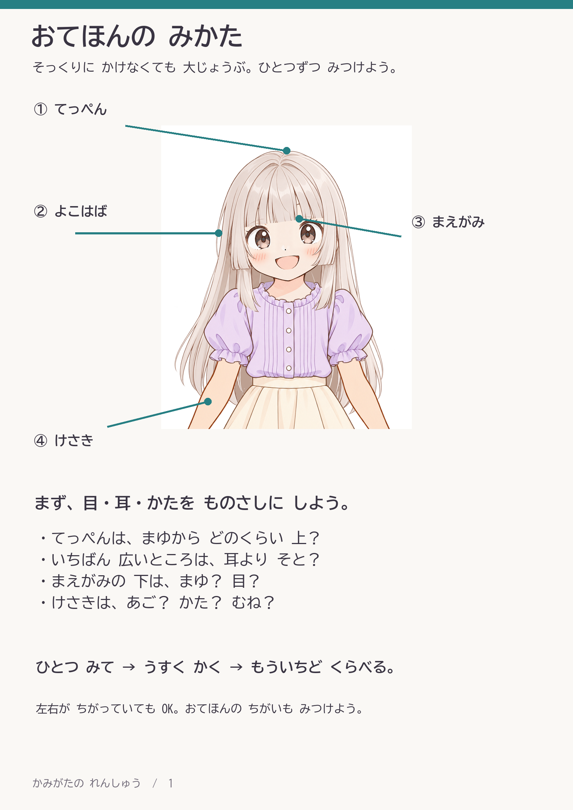
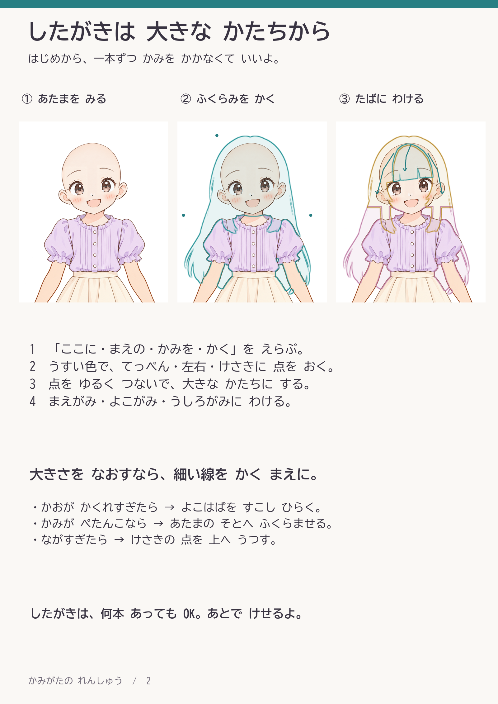
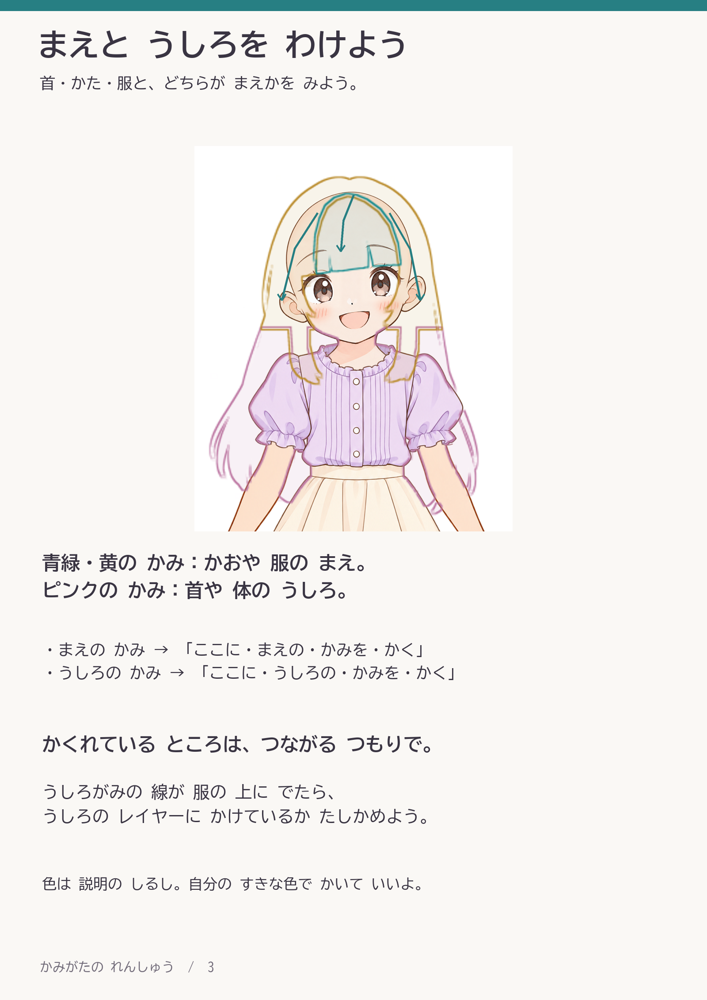
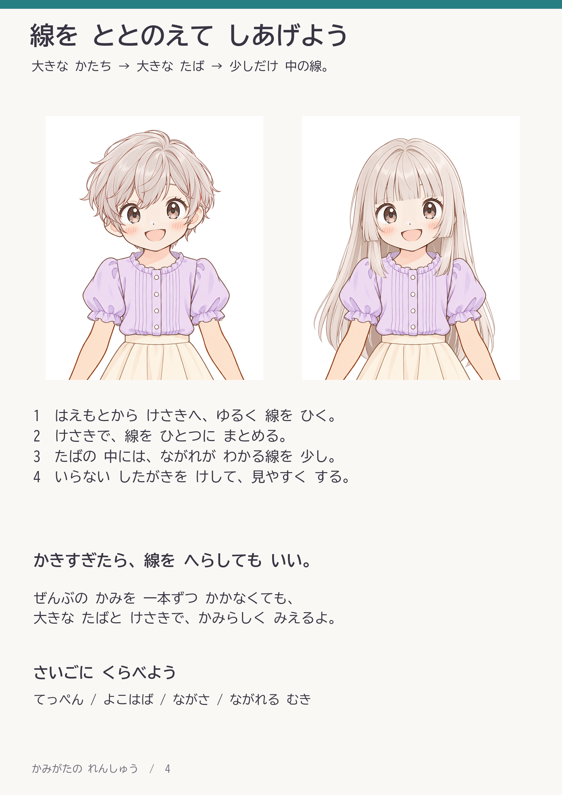
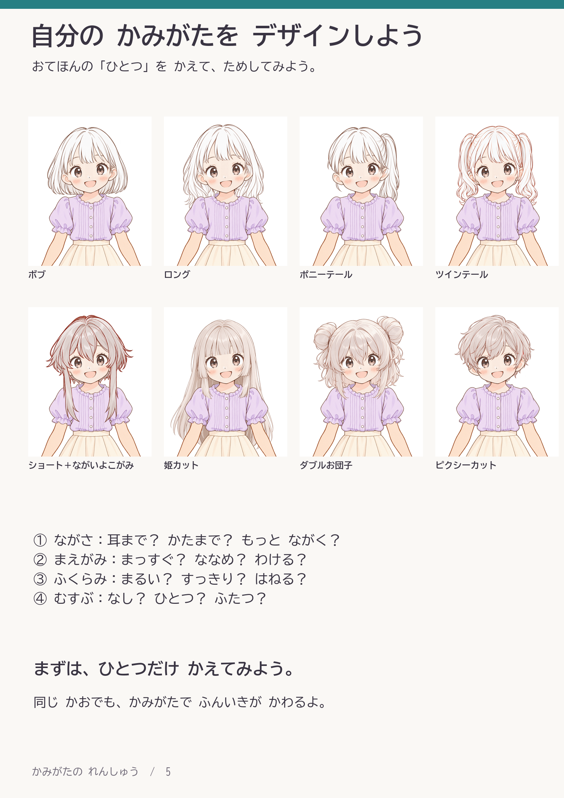
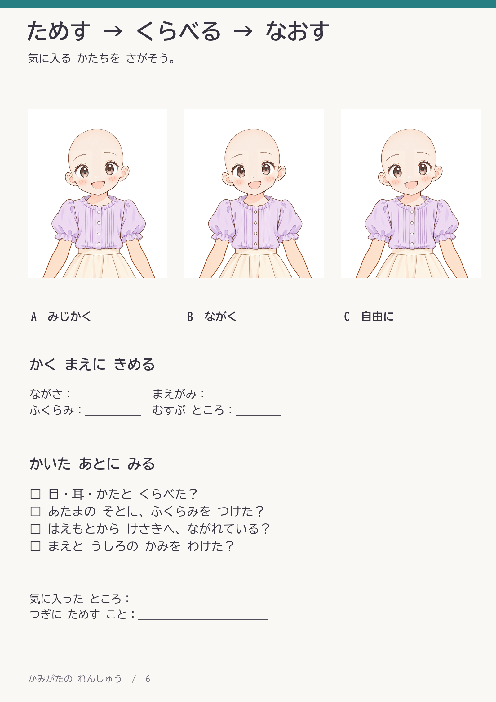

ボブ の かきかたガイド
まず 下がきの 順番を 見よう。PNGは「しゃしん」に 入れて、アイビスペイントの さんしょうに ひらけるよ。
このかみの 下がきPNGを ほぞんくわしい かきかたPDFを ほぞん
1 おてほんの みかた
このページの PNGを ほぞん
2 大きな かたちから したがき
このページの PNGを ほぞん
3 まえと うしろの かみ
このページの PNGを ほぞん
4 線を ととのえる
このページの PNGを ほぞん
5 自分の デザイン
このページの PNGを ほぞん
6 ためす・くらべる・なおす
このページの PNGを ほぞん